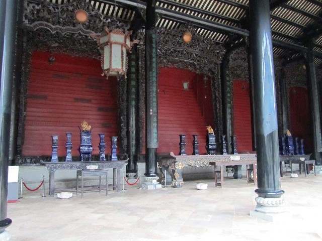

中厅
后进是供奉陈氏宗族祖先神主牌位，举行春秋祭祀仪式的地方。祖堂及两侧厅堂共有十一座八米多高木雕大神龛，在神龛台级上密集整齐地供奉着一万二千多个牌位。这些牌位包括陈氏书院董事的祖先牌位，董事职位可以用金钱购买，作为回报，他们可以获得正座主位；各地参与的陈氏宗族的祖先牌位，牌位摆放位置的优劣与捐款数目的多少挂钩，捐款数目越多，所放入牌位摆放的位置就越好；供奉在正座的陈姓缙绅名流长生禄位；捐献巨款的陈姓族人的祖先牌位，牌位位置的高下与捐款数目的多少挂钩。
神龛木雕镂通花罩，雕工精致，龛堂规模宏大，庄严肃穆。陈氏书院龛罩是广东现存最大型的清代木雕杰作，龛罩上还铭刻有“光绪十六年、回澜桥、刘德昌造”等制作年代、营造商号及地址，这是研究陈氏书院营建情况的可靠的原始资料。